Sun-Dried Tomato and Basil Cheese Spread
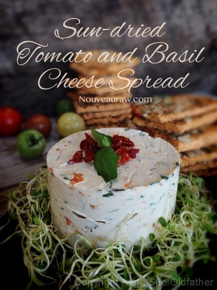
This cultured, vegan, raw, gluten-free recipe yields a soft cheese that is perfect as a spread or dip. The basic texture is similar to cream cheese, and as you can see in the photo to the right, when molded, it will hold its shape.
This recipe is dairy-free. The base is created from soaked cashews, which give it that perfect texture. You can use other nuts instead, just be aware that there will be flavor differences.
For those of you who are new to raw food recipes or just new to nut cheeses, I want to quickly touch on a few notes here. To create the “cheesy” taste, I used lemon juice and probiotics. The probiotics also aid in the fermenting process, and they add great health benefits, so I suggest that you give it a try so your body can reap the rewards.
In the ingredient list, I provided a link for the probiotic I used. If you can’t find it or you have another brand on hand, that’s fine. Probiotic powder comes in capsules, so you will be emptying them out into a teaspoon. I had to empty seven to get the amount I needed.
The fermenting / culturing process can take 24-48 hours. There are two factors that come into play: the climate where you live and how strong a “cheesy tang” taste you like. After 24 hours, take a peek and do a tiny tasting. Once you put the cheese in the fridge, the fermentation process slows down big time, so get it to the stage that you like before chilling.
This cheese has a pretty mild flavor. Sun-dried tomatoes and basil are a marriage made in culinary pantry heaven. Be sure to use sun-dried tomatoes that are not packed in oil. Okay, off you go…scuttle into the kitchen and get busy. Be sure to look through all the photos below for more ideas on what to do with this cheese.
Yields 2 1/2 cups
Cheese base:
- 2 cups (286 g) cashews, soaked 2+ hours
- 1 cup (216 g) water
- 1 tsp (2 g) probiotic powder
After fermentation:
- 1⁄4 tsp (2 g) Himalayan pink salt
- 2 tsp (3 g) nutritional yeast
- 1 tsp (6 g) lemon juice
- 1/2 cup fresh basil, minced
- 1/2 cup minced sun-dried tomatoes, rehydrated
Preparation:
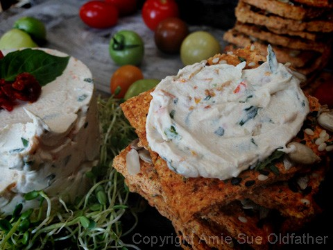
Cheese base and fermentation:
- After soaking the cashews, drain and discard the water.
- Combine the cashews, water, and probiotic powder in a high-speed blender until smooth and creamy.
- If you detect any grittiness, keep blending.
- Place a strainer inside a bowl and line the strainer with cheesecloth, allowing the edges to drape over the edge of the bowl.
- Place a nut bag in the center of the cheesecloth and pour the cheese into the bag. Close and pile the rest of the bag on top, then wrap the cheesecloth around everything.
- If you don’t have a nut bag, you can pour the cheese mix straight into the cheesecloth, just be sure to double or triple the layers. The nut bag is my personal preference but is not required.
- Place a weight on top of the cheesecloth ball.
- It should not be so heavy that it pushes the cheese through the cloth, but heavy enough to gently start to press the liquid out.
- I use a mason jar filled with water or rocks for the weight. Cover everything with a towel.
- Leave to ferment for 24-48 hours at room temperature.
- Use the timing as a basic range. The culturing process can go slower or quicker than expected, depending on the ambient room temperature.
- Taste test the cheese throughout the fermenting process to find the “sweet spot” of flavor that you prefer. Be sure to use a clean spoon so you don’t contaminate the cheese.
After fermentation:
- Rehydrate the sun-dried tomatoes by covering them with warm water. Set aside while you get everything else ready.
- Once fermentation is complete, remove the cheese from the cloth and place it in a medium-sized bowl.
- Stir in the salt, nutritional yeast, and lemon juice.
- Drain and discard the soak water from the sun-dried tomatoes. Squeeze the excess water from the tomatoes before adding to the cheese. Rough chop if needed.
- Mix in the basil and tomatoes.
- Store in the fridge in an airtight container for 5-7 days.
- If you want to use a mold, place the cheese into a mold, and cover it with plastic. Chill overnight. If you use a food ring, you won’t need to oil it; after the cheese has chilled, just lift the ring off and serve.
This is the probiotic I used, but you can use any brand that you have on
hand. I had to open seven capsules to create one teaspoon.
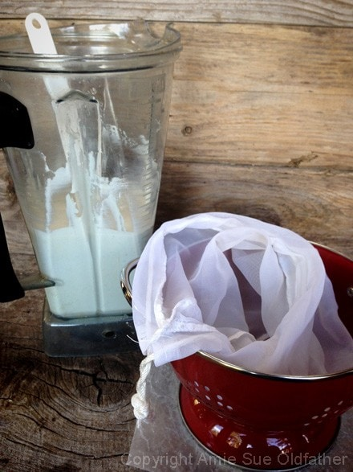
After blending the cheese base to a smooth cream, pour into a nut bag. You can
use cheesecloth instead. After years of making these cheeses, I prefer to line my
container with cheesecloth, but pour the base into a nut bag, which makes it
simpler to remove once the fermentation process is over. This is just a preference.
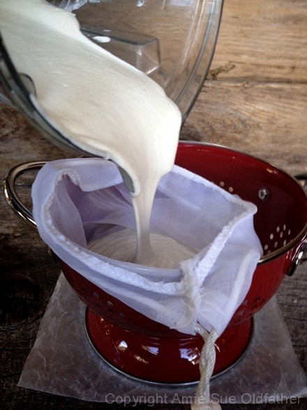
Oops, forgot the cheesecloth! Do as I say, not as I do.
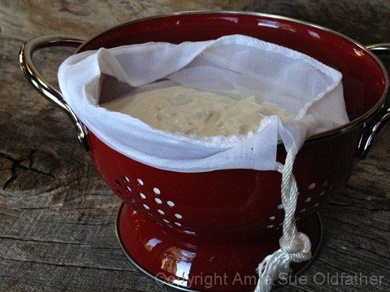
Be sure to put the colander inside another bowl to catch any liquid that may
drain out. Close the top of the nut bag/cheesecloth and put a weight on top.
The purpose of the weight is to put some pressure on the cheese mix, helping it
to drain any liquid that releases. Don’t make the weight so heavy that you start
to see the mix oozing through the cheesecloth.
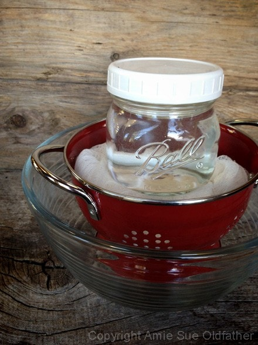
Food rings are a fun tool to have on hand–a cheap investment that reaps big rewards.
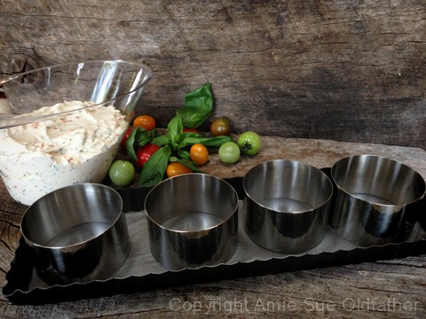
I decided to only mold 3 and keep the extra in a dish to use for a quick spread.
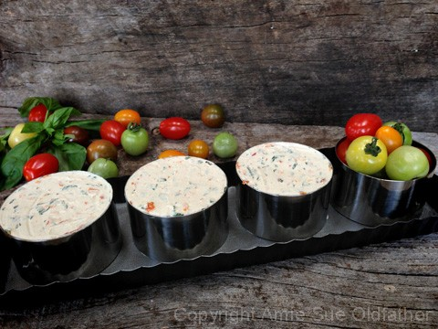
Before removing the food ring, be sure to place the cheese on the plate or platter that
you want to present it on, as it is more difficult to transfer once freed.
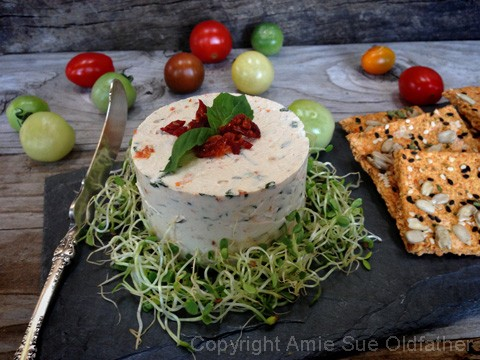
I think this cheese spread is so beautiful.
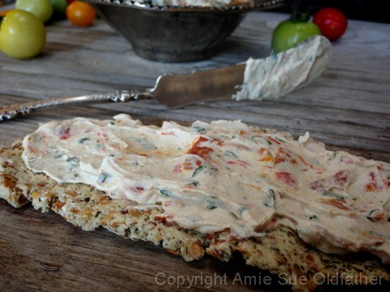
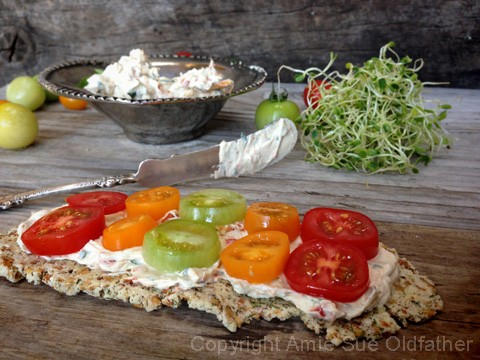
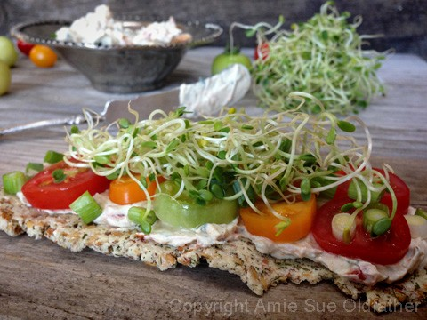
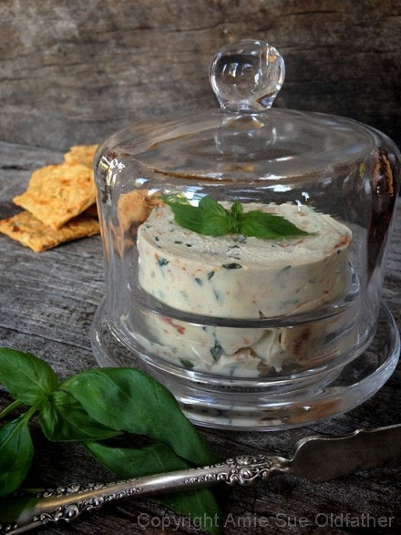
Let’s take this cheese to another level. If you have any left over, spread it out
onto the teflex sheet that comes with the dehydrator. Score into crackers and
dehydrate at 115 degrees (F) for 6-8 hours or until dry. These will not be
sturdy crackers, rather crumbly to be honest, but delicious with a salad.
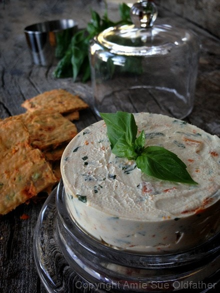
You can also chop it up into crumbles to sprinkle over your salad. So many options!
© AmieSue.com